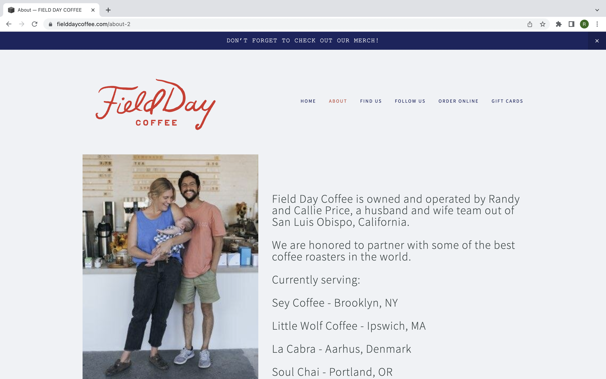
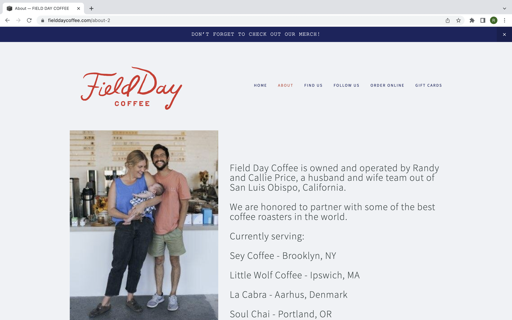
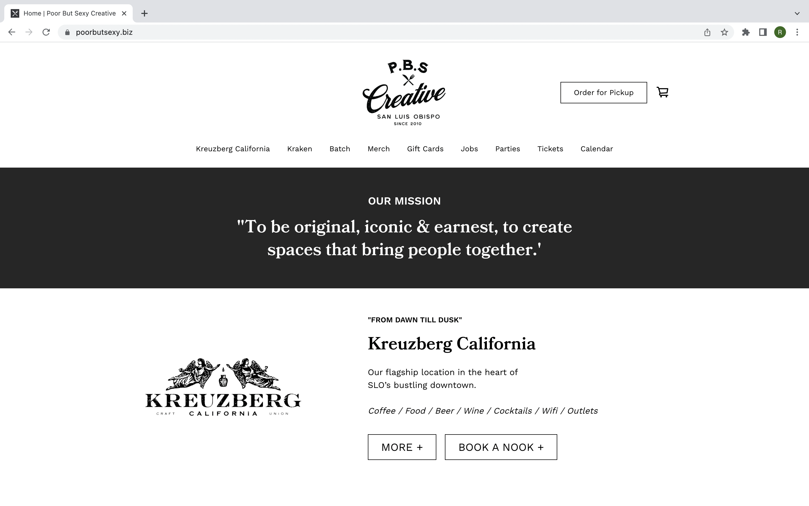
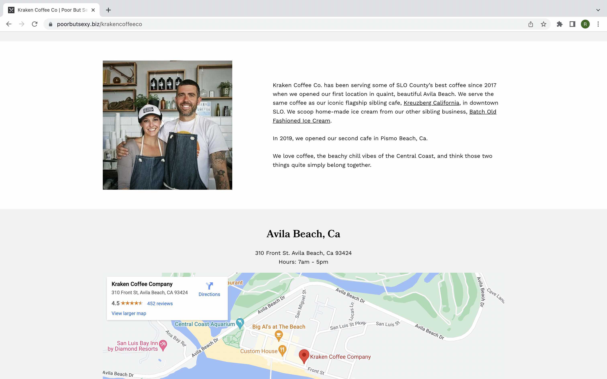

Final project proposal
Introduction
Roasterz
We are a small family-owned coffee shop located in the town of San Luis Obispo.
Target audience
The people who use the site are locals of San Luis Obispo or tourists, in the age range of 18-60.
Their primary tasks are to find locally owned coffee shops. Their purpose may be to get caffeine, to socialize, or to study or do work.
Comparative analysis
Scout Coffee Co


Field Day Coffee
 

Kraken Coffee Co
poorbutsexy.biz/krakencoffeeco
 Website content
Home
Open every day 6:00am-4:00pm 805-999-3434 info@roasterz.com Our Mission: To create a place where you can feel at home with the strangers around you.
[Image of Coffee]
About us
We are Jon & Sara Peterson, owners of Roasterz. We spent over 10 years dreaming, planning, learning and working in all things coffee with the hope that someday we would start a shop of our own. In January of 2014, we launched Roasterz on Garden Street in Downtown San Luis Obispo. Thank you so much to all of you who have made this possible. Our goal has always been to create inspiring spaces, with great people and amazing products, in a way that truly adds value to the community around us. We hope you love it here.
[Image of owners]
Menu
[Image of espresso machine]
Location
3456 Mission St. San Luis Obispo, CA 93401
[Image of the front of the shop]